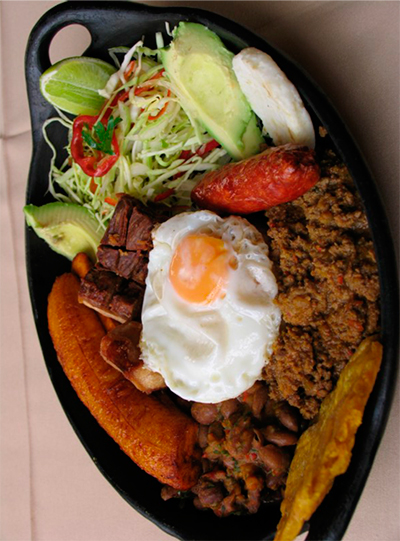
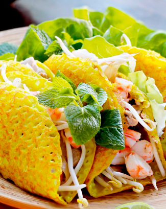
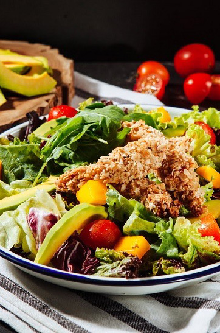
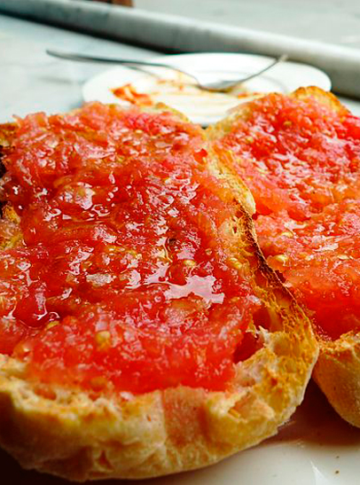
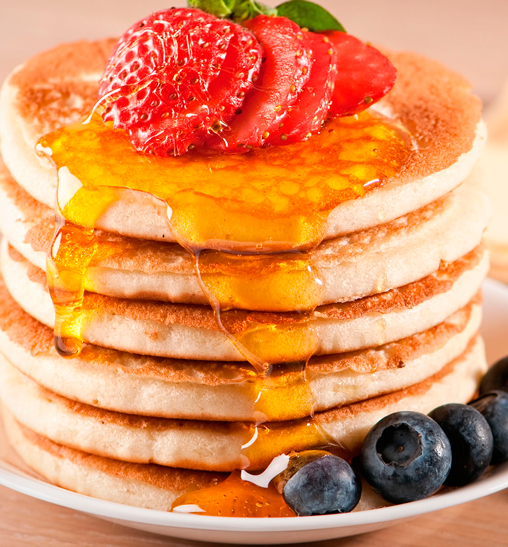
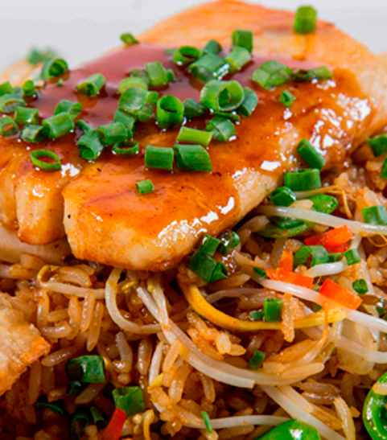
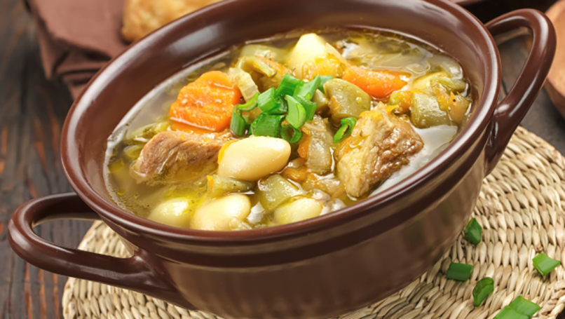

CHIMICHURRI
Blog de la Gastronomia
del buen sazon en Colombia
Favoritos






Arroz con Pollo
09-11-2018

La comida típica cubana está influenciada por indígenas de África, árabes, chinos, portugueses y culturas españolas. A lo largo de los siglos, todos ellos introdujeron especias como el ajo, el comino, el orégano, el laurel. La gente de Cuba utiliza carne, verduras frescas y frutas, siendo todos ellos los integrantes más importantes en los platos de comida cubana.
Ajiaco
09-11-2018
